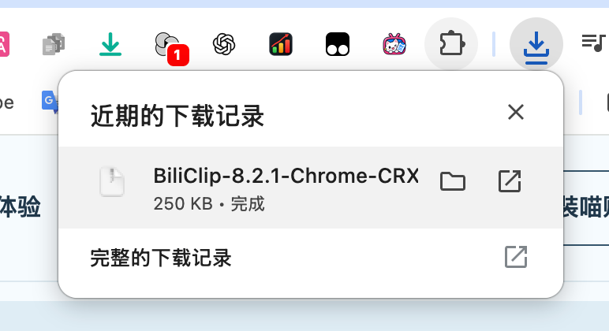
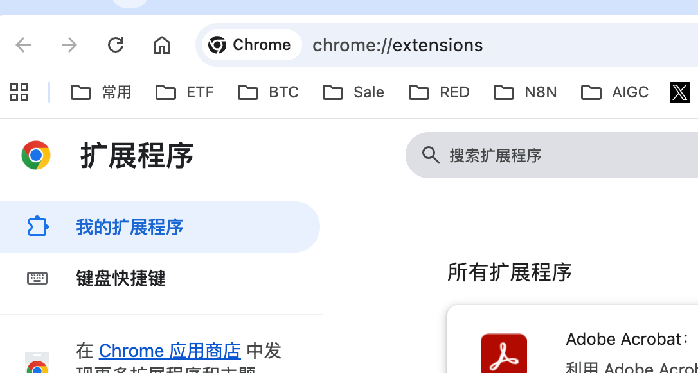

安装喵贴，开始创作。
Chrome 及 Chromium 衍生浏览器可从 Chrome 商店安装，无法访问时可下载离线 CRX。Firefox、Edge、360 仅提供各自商店版本。
安装喵贴选择浏览器
进入主页安装区，点击浏览器 Logo，查看对应商店或离线 CRX。
离线 CRX 安装
适用于 Chrome、Arc、Dia、Comet、QQ、夸克、2345、百分、UC 和搜狗等 Chromium 浏览器。直接下载 CRX，无需 ZIP 压缩包。

1下载 CRX 文件
下载后，点击浏览器右上角的下载图标，再点击文件夹图标，找到 .crx 文件，无需解压。

2打开扩展程序页面
复制下方地址，粘贴到浏览器地址栏，按回车打开。
chrome://extensions

3开启开发者模式并拖入
打开右上角的「开发者模式」，将下载好的 .crx 文件拖入此页面，按提示确认。完成后刷新 B 站。
若浏览器阻止安装本地 CRX，请优先使用商店；也可用解压工具提取 CRX 内容，再通过「加载未打包的扩展程序」选择含 manifest.json 的文件夹。
使用教程 / 投稿助手
投稿助手投稿助手
 预设标签与投稿助手集中显示，常用选项一键执行。查看原图 ↗
预设标签与投稿助手集中显示，常用选项一键执行。查看原图 ↗在完整投稿编辑表单右侧找到「喵贴 · 投稿助手」。按钮名称是「一键执行」，标签预设需要另外逐组执行。
按当前 8.2.1 脚本 / 待发布扩展核对 · 内容校对：2026-11-23 · 商店旧版可能不同
试一试：本地交互练习
1. 打开与保存设置
进入创作中心的视频投稿或编辑页，等标题与简介表单出现。面板可收起、展开和拖动；设置会自动保存到当前渠道的本地存储。
2. 内容填写
「标题写入简介首行」读取当前稿件标题并替换简介首行，不改动投稿标题本身。「简介」下拉框勾选要追加的预设；可以多选，也可选择「不使用简介预设」。编辑预设要在简介框下方操作。
如果勾选标题但投稿标题为空，执行会提示先填写标题。
3. 投稿选项
声明从弹出菜单选择；主声明为单选，「内容为自制：未经作者允许，禁止转载」是独立选项，转载稿件不能同时添加该自制声明。知识分区可勾选；推广、展开更多设置也按需选择。
声明选择等部分控件会立即应用，切换后请检查 B 站原表单。「自动执行与更多设置」中分别控制自动选择知识分区、自动选择预设声明。
4. 执行并核对
点击「一键执行」，查看面板逐项结果。标题和简介成功后显示上方居中的轻提示，失败则按提示处理。该按钮不执行标签预设，不选择参与话题，也不提交投稿。
只启用一个喵贴版本；每次安装或更新后刷新 B 站。填写后请核对，最后由你自行投稿。
使用教程 / 简介预设
简介预设简介预设
 标题写入首行，选中的简介预设追加到末尾。查看原图 ↗
标题写入首行，选中的简介预设追加到末尾。查看原图 ↗最多保存 10 条，每条在执行时追加为简介末尾的新一行。不是固定替换第二行，也不会自动去重。
按当前 8.2.1 脚本 / 待发布扩展核对 · 内容校对：2026-11-23 · 商店旧版可能不同
1. 编辑与增删
在原简介编辑框下方找到红色「喵贴·简介预设」。修改输入内容会自动保存；点击「＋ 增加一条预设」新增一行，按预设1、预设2编号，最多10条。删除会同步更新投稿助手的选择项；至少保留一个编辑行。
2. 下拉多选或不选
在右侧投稿助手展开「简介」，勾选需要的预设。可以多选；点击「不使用简介预设」清空选择。多选按编号顺序执行，不按勾选先后排序。空内容不追加。
3. 追加到末尾
点击「一键执行」：每条所选内容独占一行，接在原简介末尾。已有正文保留；勾选标题选项时另行替换第一行。重复执行会再次追加同样内容。
原简介首行
原有正文
预设1的内容
预设2的内容
4. 单条填入与完成提示
每条红色预设行右侧的「填入」会立即追加这一条，同时将工作台选择切换为该条。成功后页面上方中央显示轻提示。若不想再次追加，请在之后的一键执行前取消简介选择。
只启用一个喵贴版本；每次安装或更新后刷新 B 站。填写后请核对，最后由你自行投稿。
使用教程 / 标签预设
标签预设标签预设
预设标签与投稿助手集中显示，常用选项一键执行。查看原图 ↗「喵贴·预设标签」位于参与话题与简介之间。标签预设与简介预设分别保存、分别执行。
按当前 8.2.1 脚本 / 待发布扩展核对 · 内容校对：2026-11-23 · 商店旧版可能不同
试一试：本地交互练习
喵贴·预设标签 本地交互示例
在实际投稿表单中，预设位于参与话题与简介之间。
生活记录学习
示例稿件标签：生活记录
执行会跳过已有标签，保留当前标签。
只启用一个喵贴版本；每次安装或更新后刷新 B 站。填写后请核对，最后由你自行投稿。
使用教程 / 关联视频库
关联视频库关联视频库
从左侧视频库选择稿件，链接与描述分别填入右侧表单。查看原图 ↗需要登录 B 站，并先打开实际关联视频表单。不是视频上传首页上就能任意关联。
按当前 8.2.1 脚本 / 待发布扩展核对 · 内容校对：2026-11-23 · 商店旧版可能不同
1. 打开关联表单
进入支持该功能的个性化卡片编辑器，切换到「关联视频」，点击「＋ 添加关联视频」，让链接与描述输入框出现。未开放入口的账号、稿件或编辑状态，以 B 站页面为准。
2. 选择本人稿件
在「喵贴 · 关联视频库」切换「我的视频」或「合集」；打开合集后可返回上级。可以按标题或 BV 搜索当前已加载内容。点击刷新重新请求；有「加载更多」时继续加载。当前稿件会被排除，搜索结果不等于全站搜索。
3. 填入与播放
点击对应稿件「填入」，BV 与标题分别进入关联链接和描述字段。粉红色「播放」在新标签页打开视频。表单未准备好时先按提示打开关联输入框，再重试。
4. 未登录或数据过期
确认登录了正确账号；列表和合集信息按账号本地缓存，刷新可以重新读取。接口失败或没有匹配数据时查看提示，不要把空列表当作账号没有稿件。
只启用一个喵贴版本；每次安装或更新后刷新 B 站。填写后请核对，最后由你自行投稿。
使用教程 / 视频信息复制
视频信息复制视频信息复制
 跟随高亮提示，复制视频标题和链接。查看原图 ↗
跟随高亮提示，复制视频标题和链接。查看原图 ↗封面上的蓝色按钮是「复制 BV + 标题」，粉红色按钮是「复制标题 + 链接」。两颗按钮始终一行。
按当前 8.2.1 脚本 / 待发布扩展核对 · 内容校对：2026-11-23 · 商店旧版可能不同
1. 在封面上复制
鼠标移到普通视频封面后出现两颗按钮；窄封面会缩小按钮。顶部导航的历史、收藏、动态浮层不显示这些按钮。首页引导会固定一个真实封面示例。
2. 在详情页复制
播放器与视频操作栏之间的复制栏可选标题、BV、BV + 标题、链接、标题 + 链接。复制中、成功或失败会在原按钮反馈；成功也会出现轻提示。
3. 手动粘贴关联信息
「BV + 标题」复制为两行文本。在创作中心的关联链接或描述框中按 Ctrl+V（Mac 为 ⌘V），或用右键粘贴，喵贴会按字段分别填入。其他地方正常粘贴完整文本。
中途复制了别的内容时，请重新复制所需视频信息。不会后台读取系统剪贴板。
只启用一个喵贴版本；每次安装或更新后刷新 B 站。填写后请核对，最后由你自行投稿。
使用教程 / 工具栏菜单
工具栏菜单工具栏菜单
扩展版点击浏览器工具栏中的喵贴图标；油猴版点击脚本管理器，再找到喵贴菜单。
按当前 8.2.1 脚本 / 待发布扩展核对 · 内容校对：2026-11-23 · 商店旧版可能不同
只启用一个喵贴版本；每次安装或更新后刷新 B 站。填写后请核对，最后由你自行投稿。
使用教程 / 实操引导
实操引导实操引导
跟随高亮提示，复制视频标题和链接。查看原图 ↗引导围绕当前可见控件逐步进行；可随时跳过、关闭或从「引导教程」重新开始。
按当前 8.2.1 脚本 / 待发布扩展核对 · 内容校对：2026-11-23 · 商店旧版可能不同
1. 首页复制引导
首页会固定一个普通视频封面，依次高亮蓝色「复制 BV + 标题」和粉红色「复制标题 + 链接」。复制成功后自动进入下一步，卡片刷新后会重新寻找示例。
2. 投稿与标签引导
投稿助手引导先定位简介下拉框，再定位「一键执行」和结果区；标签引导分别框选输入区、执行按钮和新增按钮，不会用一个大框代替所有操作。
3. 关联编辑器引导
个性化卡片、关联视频标签、添加按钮和视频库会在可用时引导。视频库空列表先检查刷新；成功填入才出现完成庆祝，跳过不会播放。
4. 重放、跳过与重试
说明步骤可点击下一步；实操步骤需要完成指定操作后继续。点击跳过、关闭或按 Esc 可退出。想重看时，刷新 B 站后从工具栏或脚本管理器选择「引导教程」。缺少控件时先展开对应界面，不要等待一个尚未开放的功能。
只启用一个喵贴版本；每次安装或更新后刷新 B 站。填写后请核对，最后由你自行投稿。